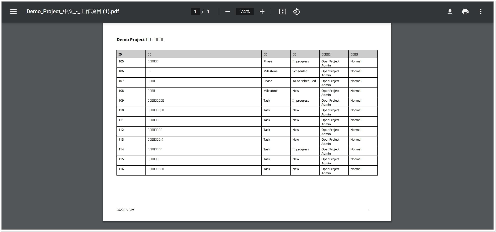

最近開始用 OpenProject 管理專案。
目前用起來什麼都好，就是在匯出 PDF 時會有中文變亂碼的問題；我翻了一下官方論壇，發現相關的討論被記錄於 2020 年；既然這個問題在短期內無法被修復的話，身為工程師又只好自己下場啦！
狀況說明
首先看一下 Demo 用的工作項目，在系統中是可以正常顯示繁體中文的。
接著使用系統提供的匯出 PDF 功能。
得到了一份除了檔名外，內容面目全非的 PDF。

解決問題
沒啥好說的，原始碼直接拿起來啃，找到處理 PDF (view.rb) 的地方就完成一半了。
可以發現原來 PDF 的處裡使用了知名的套件 Prawn。
1
2
3
| class WorkPackage::PDFExport::View
include Prawn::View
...
|
在產生 PDF 時，OpenProject 為 Prawn 設置了 Noto Sans 字型。
1
2
3
4
5
6
7
8
| def document
@document ||= Prawn::Document.new(options.merge(info:)).tap do |document|
register_fonts! document
document.set_font document.font('NotoSans')
document.fallback_fonts = fallback_fonts
end
end
|
1
2
3
4
5
6
7
8
9
10
11
12
13
14
15
16
17
18
19
20
21
22
| def register_fonts!(document)
font_path = Rails.public_path.join('fonts')
document.font_families['NotoSans'] = {
normal: {
file: font_path.join('noto/NotoSans-Regular.ttf'),
font: 'NotoSans-Regular'
},
italic: {
file: font_path.join('noto/NotoSans-Italic.ttf'),
font: 'NotoSans-Italic'
},
bold: {
file: font_path.join('noto/NotoSans-Bold.ttf'),
font: 'NotoSans-Bold'
},
bold_italic: {
file: font_path.join('noto/NotoSans-BoldItalic.ttf'),
font: 'NotoSans-BoldItalic'
}
}
end
|
問題的根源已經出現了，由於 NotoSans 無法顯示中文導致了亂碼，而解法也很簡單粗暴，它缺什麼就給它什麼，把繁中字型給它送過去。
1
2
3
4
5
6
7
8
9
10
11
12
13
14
15
16
17
18
19
20
21
22
23
24
25
26
27
28
29
30
31
32
33
34
35
36
37
38
39
| def register_fonts!(document)
font_path = Rails.public_path.join('fonts')
document.font_families['NotoSans'] = {
normal: {
file: font_path.join('noto/NotoSans-Regular.ttf'),
font: 'NotoSans-Regular'
},
italic: {
file: font_path.join('noto/NotoSans-Italic.ttf'),
font: 'NotoSans-Italic'
},
bold: {
file: font_path.join('noto/NotoSans-Bold.ttf'),
font: 'NotoSans-Bold'
},
bold_italic: {
file: font_path.join('noto/NotoSans-BoldItalic.ttf'),
font: 'NotoSans-BoldItalic'
}
}
tc_normal = {
file: font_path.join('nototc/NotoSansTC-Regular.otf'),
font: 'NotoSansTC-Regular'
}
tc_bold = {
file: font_path.join('nototc/NotoSansTC-Bold.otf'),
font: 'NotoSansTC-Bold'
}
document.font_families['NotoSansTC'] = {
normal: tc_normal,
italic: tc_normal,
bold: tc_bold,
bold_italic: tc_bold
}
end
|
而 Prawn 其實對這種字型異常是有處理的，你可以自行選擇要取代或是把 NotoSansTC 變成它發生異常時的後備字型。
1
2
3
| def fallback_fonts
['NotoSansTC']
end
|
最後再匯出一次，就可以看到正常顯示的 PDF。
其它
研究過程中有發現到官方的無奈，據了解，目前還沒有一種字型可以支持世界上的所有語言，如果真的要做到支持全語系，那專案勢必會肥上許多。
我也因此產生了「每次在更新 OpenProject 後，都需要做一次上述修改」的困境；沒錯，這篇文章寫了那麼多，其實只是要提醒自己沒事不要亂更新而已！